> # Fer_1640.mws
A Public Lecture : The history of Fermat [1601-1665] numbers from August 1640
Question : What is this lecture about ?
Answer : It is about one of the most beautiful questions in Mathematics (going back to August 1640),
a question that is simple to explain , to state , but for which there is absolutely no sign of an
answer. It is about a question which may never be answered . Its answer - if ever there be
one - will require creativity of unimaginable proportions.
Recently - cycling over the
Luke Kelly Bridge
- I came upon someone who said: "John, you have
one minute in which to tell me what this Fermat business is all about," and this was my reply: ... ...
Now you may - if you wish - go home.
Speaker : Dr. John Cosgrave.
Address: Mathematics Department, St. Patrick's College, Drumcondra, Dublin 9, IRELAND.
e-mail : John.Cosgrave@spd.ie (College) or johnbcos@iol.ie (home)
Web : <http://www.spd.dcu.ie/johnbcos>
Venue : Room E 201, St. Patrick's College, Drumcondra, Dublin 9, IRELAND.
Note . This lecture has been prepared using the Computer Mathematical System Maple , which is researched and developed
by Waterloo University (Canada), INRIA (France) and the ETH (Zurich). Maple is used by all academic mathematics students
here in St. Patrick's College. The Maple files of this talk
in active mws format (which allows a user who has Maple to make his/her own alterations), or
in
html
format (which allows anyone who doesn't have
Maple
- but who has a web facility -
to at least read the text of this lecture),
and many other
Maple
worksheets:
1st. year Maple /Calculus/Analysis
2nd year Number Theory [under construction]
3rd year Number Theory and Cryptography
some public or seminar/conference lectures
together with course notes, examination papers (written and Maple lab), may be accessed/downloaded at my web site.
students in St. Patrick's College, Drumcondra. Most of our students are taking the B.Ed. degree, with a view to becoming
primary school teachers in Ireland; we also have a number of B. A. students.]
I believe it has been remarked (by whom?) that in a once-off lecture what one ought to do it this:
1. Tell your listeners what you are going to tell them,
which in my case is: I am going to tell you about the historical background to a mathematically significant discovery (made
here - on computer #17 in Room D318 of St. Patrick's College, Drumcondra - over the weekend of Frid. 23rd. to Sunday
25th. July 1999), namely that the 382447th. Fermat number is composite .
That Fermat number - and you will know its meaning shortly - is so utterly vast that were one to write it out in decimal notation
(i.e. in the normal, everyday way: ... 79324 ... 872349100218 ... 7777766655443221 ... etc.) at - let us say - 4 digits per inch - and
not just on a single sheet of paper, but on sheet upon sheet, stacked back-to-back (at - say - 250 sheets per inch of depth - the
thickness of photocopying paper) to form a giant cube, then that cube would have side length roughly 10000000000000....000
(38,358 noughts!!) light years (1 light year - the distance light travels in a year - is approximately 58,656,960,000,000 miles).
That is big
; the entire universe would fit inside a cube whose side was only (!) about 30,000,000,000 light years.
2. Tell them, what you told them, you would tell them: that corresponds to the hyperlinked topics just coming up.
3. Tell them, you have told them, what you told them, you would tell them: that will come at the end.
Introduction. A brief revision of some simple mathematical terminology, and a few relevant
Maple
commands:
1.
Natural
numbers (1, 2, 3, 4, ... ,
n
, ... ). Addition and multiplication using
Maple
.
2.
Powers
(
power of
) [this will enable me to tell you
what
the
Fermat
numbers
are
,
and I will briefly consider the question of the size of Fermat numbers].
3.
Division
.
Dividing
one number by another,
quotient
,
remainder
.
Relevant
Maple
commands, and '
modular exponentiation
.'
4.
Prime
numbers (2, 3, 5, 7, 11,13, 17, 19, ... ), and
composite
numbers (4, 6, 8, 9, 10, 12, 14, 15, ... ).
In my lecture I intend
passing quickly over the next two sections
(which the interested attendee may read at his/her
leisure at a later date by looking up the html format version of this talk at my web site); these next two sections are
intended only to provide the historical background to Fermat's discovery of the numbers that now bear his name.
Fermat numbers made their first appearance in August 1640 . Fermat's belief with regard to his numbers.
Euler-Fermat theorem (1732).
Euler's discovery (1732) in connection with
 .
.
Landry's discovery (1880) in connection with
 .
.
[though see Hugh C. Williams' book
re
Clausen (1854) reference, and much, much more besides.]
Pepin's theorem (1877)
Morehead and Western (independently, 1903) in connection with
 .
.
Brillhart and Morrison (1970) in connection with
 .
.
[Only the surface can be scratched as far as attribution or credit is concerned;
the interested reader should consult Hugh C. Williams' remarkable book.]
The current state of knowledge,
Proth's theorem of December 1878, and
Yves Gallot's remarkable
Proth.exe
program.
Events of the summer, starting 5.00 P.M. Friday 23rd. July 1999 [a much more extensive version of this section may be read
at my web site, especially with regard to what I might call the personal history side of events, from my point of view, and also
from Yves Gallot's.]. Briefly, that over the weekend of Frid. 23rd. - Sun. 25th. July, and as a participant [the complete list of
participants as of August 4th. 1999] in the Yves Gallot founded Proth prime project, I had the good fortune to discover - using
Yves Gallot's remarkable, and greatly admired Proth.exe program - the largest known composite Fermat number. Precisely
what that actually means will - I hope! - be clear by the end of my talk.
1. The term ' number ' has a variety of meanings.
Convention . In what follows (for simplicity, and relevance) whenever I use the term number I will generally mean - unless
otherwise stated - what is called a ' natural ' number: The natural numbers are the numbers: 1, 2, 3, 4, 5, 6, ... , n , ...
Addition:
> 3 + 8;

> 9876543213333334444449999999999999999999999999888888899999999998888885555555554444444433333328888899999999999998888888888877777777766666666 + 22222244444444449999999999999923800000999999999999999999999776599999999999999999999999432987;


Multiplication . Multiplying 3 and 8 - denoted by 3*8 in Maple - produces 24.
> 3*8;

>
98765432133333347777111111111111111111111111111111177777777777777333333333333333334444498888888888888877777777776666655676778876656 *
23877699999999999999999999999999999999990000000000005432987999999999999988888887765546667745332000000000000;

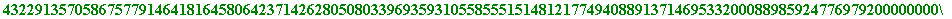
2.
Powers
. By "2 to the power of 5" (say) is meant the
repeated
product 2*2*2*2*2 (where there are five two's), which is 32. The standard mathematical notation for 2 to the power of 5 is
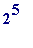
. By "3 to the power of 4" (say) is meant the repeated product 3*3*3*3 (where there are four three's), which is 81. The notation for 3 to the power of 4 is
. The general notation for "
a
to the power of
b
" - namely
a
*
a
*
a
*...*
a
(where there are
b
occurences of '
a
') - is
 .
.
A special case
. In the case where the raising power
b
is 2,
 is generally called "
a
squared
."
is generally called "
a
squared
."
Examples .
> 2^5; # the first one above
> 3^4; # the second one above
> 5^2; # 5 squared:
> 19999999988888888777776255244423123100000000006666666665555555555555544444444444444444444411111111111111444444444444444012345678987654321^2;
Definition of the Fermat numbers . I can now tell you what the Fermat numbers are [in so doing I am "pulling them out of a hat," because I want to get down to basics as quickly as possible; later I will show you how they arose in a most natural fashion] ; the Fermat numbers are the infinite sequence of numbers formed by :
starting with the number 2
repeatedly form successive squares
:
 ,
,
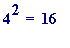
,
,
,
,
, etc
add 1 to every one of the above numbers
, starting with the initial '2,' forming the
'
Fermat
' numbers
:
3, 5, 17, 257, 65537, 4294967296,
, etc
The standard mathematical symbols for those numbers are :
, etc
There is a succinct mathematical description for these numbers - based upon elementary observations like:
. . . , , , ... , (the completely general case)
- namely that the
n
-th Fermat number (denoted by
 ) has this value:
) has this value:
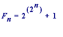
(for
, ...)
> F[0] := 2^(2^0) + 1; # is the "zero-th" Fermat number, the initial one
> F[1] := 2^(2^1) + 1; # is the "first" Fermat number
> F[2] := 2^(2^2) + 1; # is the "second" Fermat number

> F[3] := 2^(2^3) + 1; # is the "third" Fermat number

Just a pause on that last calculation
. There I was asking
Maple
to compute the 3rd. Fermat number,
, whose value is given by
.
Check
:
 is 8, and so
is
, which is 2*2*2*2*2*2*2*2, which is 256. Thus
is 8, and so
is
, which is 2*2*2*2*2*2*2*2, which is 256. Thus
![[Maple Math]](images/FER164045.gif) = 256 + 1 = 257.
= 256 + 1 = 257.
> F[4] := 2^(2^4) + 1;
> F[5] := 2^(2^5) + 1;

> F[6] := 2^(2^6) + 1;

> F[7] := 2^(2^7) + 1;

> F[8] := 2^(2^8) + 1;
> F[9] := 2^(2^9) + 1;
> F[10] := 2^(2^10) + 1;
> F[11] := 2^(2^11) + 1;
> F[12] := 2^(2^12) + 1;
> length(F[12]); # the command to show F[12] has 1234 digits:
The Fermat numbers grow in size extremely rapidly, and it is elementary to argue that each one has
either twice as many digits as the previous one
or one fewer than twice as many digits as the previous one
which I merely illustrate with:
> length(2^(2^4) + 1);

> length(2^(2^5) + 1);
> length(2^(2^6) + 1);
> length(2^(2^7) + 1);

> length(2^(2^8) + 1);
> length(2^(2^12) + 1);

> length(2^(2^13) + 1); # 2467 is 2*1234 - 1

I hope you can begin to appreciate how it is that the 382447th. Fermat number -
 - can be so large, can have so many digits:
- can be so large, can have so many digits:
I have done a rough calculation (see the Fermat Number Record section of my web site) which establishes that
 has approximately
has approximately
digits.
So far I have only told you what the Fermat numbers are, and I have yet to tell you how they came about in the first place, and
what it is about them that has created such interest in them. That will come shortly. First, though, we need to have a look at:
Division . Choose two numbers - 95 and 7 (say) - and " divide " the larger ( 95 ) by the smaller ( 7 ):
95 = 7 * 13 + 4 ... (i)
It is usual to say that " 7 divides into 95 thirteen times (the 13 is the quotient ), and leaves remainder 4 over. One then says "7 does
not divide evenly into 95" [though mathematicians never say "evenly": you will hear them say: "95 is not divisible by 7." You may
well say that mathematicians are odd that they don't say evenly.]
Now choose two other numbers - 98 and 7 - and divide the larger ( 98 ) by the smaller ( 7 ):
98 = 7 * 14 ... (ii)
It is usual to say that " 7 divides evenly into 98 " ( 14 times; the 14 is the quotient ).
In case (i) one says there is a remainder of 4 when 95 is divided by 7.
In case (ii) one says there is a
remainder of 0
when 98 is divided by 7.
Here are the Maple commands for finding those remainders:
> 95 mod 7;

> 98 mod 7;

> 2^5 mod 7;

> 2^980 mod 816654321900000000055555554444444333333222222211111177777777777777666665555555558765555444491;
but look at this (identical to the previous one, except that I have altered the '980' to ... ):
> 2^98076054328 mod 816654321900000000055555554444444333333222222211111177777777777777666665555555558765555444491;
Error, integer too large in context
Comment . The 'too large' refers to the , which - having 29,523,834,210 digits - is beyond Maple 's capacity
(roughly 500,000 digits) for handling natural numbers.
But computations of such remainders is exactly the sort of thing one wishes to do!!
Have we arrived at an impasse? No!!, not at all!! What we have been trying to do in the last three computations is to carry out
what is known as a
modular exponentiation
computation: that is to compute the remainder that
 leaves on division by
M
, where
leaves on division by
M
, where
a , b and M are numbers.
To our rescue comes a technique (known as the square-and-multiply method ; it is fundamental to many areas, including cryptography)
which enables such computations to be carried out without having to compute the actual value of the number
 . That method is
. That method is
incorporated into Maple with the following (see how it differs from above)
> 2&^98076054328 mod 816654321900000000055555554444444333333222222211111177777777777777666665555555558765555444491;
Instantly!!! You will see later why the facility to perform such a computation is of fundamental importance.
Finally, two critical terms, prime number and composite number:
4. Prime numbers and composite numbers . Every number greater than 1 is - of course - evenly divisible by 1 and
itself.
However,
some
numbers '
p '
, greater than 1, are
evenly divisible
only
by 1 and
p
.
The first several are 2, 3, 5, 7, 11, 13, 17, 19, 23, 29, ...
and some later (highly structured) ones are:
8191 ( =
), ... ,
1111111111111111111 (where there are nineteen 1's), ... ,
the 1031-digit number
+ ... +
( =
![[Maple Math]](images/FER164072.gif) ) , ...
) , ...
Such numbers are said to be
prime
, and Euclid's 3rd. century B.C. proof that there are an infinite number of prime
numbers is rightly considered a classsic of early mathematical work
On the other hand,
all other
numbers '
n
', greater than 1, are
evenly divisible
by
some
number other than 1 and
n
.
The first several are: 4 (which, being 2*2, is evenly divisible by 2)
6 (which, being 2*3, is evenly divisible by 2, or 3)
8 (which, being 2*4, is evenly divisible by 2, or 4)
9 (which, being 3*3, is evenly divisible by 3),
and some later (highly structured) ones (compare with the above special primes) are:
8193 ( =
),
11111111111111111111111 (where there are twenty-three 1's), ... ,
the 1102-digit number
+ ... +
( =
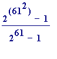
), ...
Such numbers are said to be
composite
.
In short :
Prime numbers are numbers with exactly two ' divisors '
Composite numbers are numbers with more than two divisors
A common misunderstanding . One sometimes hears things like: " A composite number is a number that is a product of two primes ,
like 15 which is 3 times 5, or 35 which is 5 times 7, etc." That is not so. Those numbers - 15 and 35 - are examples of composite numbers,
but numbers like 60 are also composite (60 is evenly divisible by 2, and so 60 is 2 times 30. Thus 60 is the product of two numbers one of
which (2) is prime, but the other one (30) is not. What is true is that every composite number is a product of a certain number of primes;
60, for example is the product of the primes 2, 2, 3 and 5.
> ifactor(15);
> ifactor(60);
> ifactor(1008);
> ifactor(3087);
So much for terminology .
October 1997 - on the then recently discovered world record size Mersenne prime. It is available at my web site.]
A perfect number is one whose sum of factors - excluding itself - is equal to itself.
Examples
6 is perfect, because the factors of 6 are 1, 2, 3 and 6, and .
28 is perfect, because the factors of 28 are 1, 2, 4, 7, 14 and 28, and
496 is perfect, because the factors of 496 are 1, 2, 4, 8, 16, 31, 62, 124, 248 and 496, and
Euclid's great discovery (and one to which students may easily be led) was
: Let
 be a natural number such
be a natural number such
that (
 ) is a prime number, then the number
is a perfect number.
) is a prime number, then the number
is a perfect number.
Examples .
is prime, and thus the number * , is perfect
is prime, and thus the number
*
= 33,550,336, is perfect
> isprime(2^13 - 1);

> 2^12*(2^13-1);
Historical (historic, and unsolved) question
: For which values of
is (
 ) prime?
) prime?
Some partial answers .
If
n
is composite (i.e., is not prime)
then
(
 ) is also composite, and - as a consequence -
) is also composite, and - as a consequence -
if
(
 ) is prime,
then
n
is prime.
) is prime,
then
n
is prime.
Warning
. It is
not true
that if
n
is prime then
(
 ) is prime
) is prime
Examples . Note that 11, 23 and 29 are all prime, but:
> isprime(2^11 - 1);
> ifactor(2^11 - 1);
> isprime(2^23 - 1);

> ifactor(2^23 - 1);
> isprime(2^29 - 1);

> ifactor(2^29 - 1);
Mersenne numbers, Mersenne primes .
Definitions.
Let p be prime, then , is the Mersenne number formed from the prime p .
Let
p
be prime; if
 is prime, then it is said to be a Mersenne prime.
is prime, then it is said to be a Mersenne prime.
>
Mersenne := proc(n1, n2) local p;
for p from n1 to n2 do
if isprime(p) and isprime(2^p - 1)
then print(p, 2^p - 1) fi od end:
> Mersenne(2, 100);
WARNING. Do not fall into the trap of thinking that you can find big Mersenne primes using this ... !! I am attempting
to avoid straying into very, very deep waters.
Mersenne primes - like 3, 7, 31, 127, 8191, ... , each of which is a power of 2 less 1:
,
,
,
 ,
,
 , ... ,
[is the 38th known Mersenne prime,
, ... ,
[is the 38th known Mersenne prime,
with 2,098,960 digits, and is currently the largest known prime number].
Whereas Mersenne primes had their origin is a question asked in the 3rd. century B.C. (and earlier), Fermat primes/numbers
had their origin in 1640.
Pierre de Fermat (1601-1665 , and the ' father of modern Number Theory ') - a contemporary and correspondent of Mersenne's -
asked himself this apparently simple question , sometime in the Summer of 1640:
Which primes are a power of 2,
plus
1?
That is, for which values of
r
(
...) is (
 ) a prime?
) a prime?
School children, students, anyone, may easily check by hand that:
When , = 3, is prime
When , = 5, is prime
When , = 9 = 3*3, is not prime
When , = 17, is prime
When , = 33 = 3*11, is not prime
When , = 65 = 5*13, is not prime
When , = 129 = 3*43, is not prime
When , = 257, is prime
Perhaps you detect an apparent pattern?
At this point (and this has always been my experience, over many years, with my own students) most people will
immediately leap to the guesses / questions :
Is (
 ) composite when
r
is not
a power of 2? [Here the answer is a simple '
yes
,' and it is an elementary exercise to prove it.]
) composite when
r
is not
a power of 2? [Here the answer is a simple '
yes
,' and it is an elementary exercise to prove it.]
Is (
 ) prime when
r
is
a power of 2? That is, letting
) prime when
r
is
a power of 2? That is, letting
![[Maple Math]](images/FER1640144.gif) (
, ... ) be the
m
-th Fermat
(
, ... ) be the
m
-th Fermat
number, is it true that
 is prime for all
is prime for all
 ?
?
In a letter to Frenicle of
August 1640
(and another of October 1640; both letters available - in French - at Antreas P. Hatzipolakis's
web site: <http://users.hol.gr/~xpolakis/fermat/fac.html>) Fermat wrote as follows (English translation quoted from Michael Sean
Mahoney's
The Mathematical Career of Pierre de Fermat
, Princeton University Press, 2nd edition, 1994; see also Andre Weil's
Number Theory
(
An approach through history
), Birkhauser, 1984):
" But here is what I admire most of all: it is that I am just about convinced that all progressive numbers augmented by unity,
of which the exponents are numbers of the double progression, are prime numbers, such as
3, 5, 17, 257, 65537, 4294967297
and the following of twenty digits
18,446,744,073,709,551,617, etc.
I do not have an exact proof of it, but I have excluded such a large quantity of divisors by infallible demonstrations, and my t
houghts rest on such clear insights, that I can hardly be mistaken." [end of Fermat quotation.]
Fermat returned to this question over and over again in the remaining 25 years of his life, and, when he died in January 1665,
he had neither proved that all Fermat numbers were prime, nor found an example of one that was composite.
The first example of a composite Fermat number was only found in 1732, when the most prolific mathematician of all time - the
famous Leonhard Euler (1707-1783) - discovered that the 5th Fermat number,
 , is evenly divisible by 641:
, is evenly divisible by 641:
> F[5] := 2^(2^5) + 1;
> F[5] mod 641;
> ifactor(F[5]);
Question
.
How
did Euler make the discovery that
 is divisible by 641? Did he just do a trial-and-error series of calculations,
is divisible by 641? Did he just do a trial-and-error series of calculations,
trying (as some texts wrongly state) one
possible
prime divisor of
 after another?:
after another?:
> F[5] mod 3;

> F[5] mod 7;

> F[5] mod 11;

> F[5] mod 13;

and so on until ... .
Answer
. No; Euler found that
 was divisible by 641 by using the following
was divisible by 641 by using the following
of (
![[Maple Math]](images/FER1640159.gif) )
must
leave remainder 1 when divided by
. In other words, every divisor
p
of (
) must have
)
must
leave remainder 1 when divided by
. In other words, every divisor
p
of (
) must have
the following structure :
* , for some , ... .
[In later years that " " was improved - for m = 2, 3, 4, ... - to " " by a theorem of Gauss.]
The point of this theorem is simply this :
What Euler did (actually Andre Weil is of the view (which I am in sympathy) that Fermat himself also did this - using his
unproven discovery - but made an arithmetical error) was to attempt to find a factor of:
= = 4,294,967,297
by using the proved result that any prime factor p of must be of the form:
(some k = 1, 2, 3, 4, ... )
and, when he got up to
k
= 10 he found that
*
divides evenly into
 .
.
In the following century, Landry (in 1880, and at the age of 82!) found that 274,177 divided evenly into:
=
= 18,446,744,073,709,551,617
> F[6] := 2^(2^6) + 1;

> F[6] mod 274177;

> ifactor(F[6]);
Warning
. I am
not
going to use Maple to
attempt
to factor
:
> F[7] := 2^(2^7) + 1;
because that number
was only factored as recently as 1970
- it has the following prime factorization:
 = (
*
)*(
*
= (
*
)*(
*
 )
)
and it was only possible to do so because of a very great theoretical advance (the
continued fraction factorisation method
),
made that year, due to Brillhart and Morrison . [John Brillhart is in a historic photograph that I have made available at my web
site: go to my home page, and click on the Oxford 1969 button.]
> p1 := 116503103764643*2^9 + 1;
> isprime(p1);
> p2 := 11141971095088142685*2^9 + 1;
> isprime(p2);

> N := p1*p2;
> F[7];

> is(N = F[7]);

However, in 1970 it had
already been known
from the first decade of this century that
 is
composite!!
is
composite!!
Big question
.
How
had it been possible to
know
at
an earlier time
(than 1970) that
 is composite?
is composite?
of douard Lucas of the previous year, and which formed the basis of a result Franois Proth's at the end of 1878):
If
the number
leaves remainder
 when divided by
when divided by
 ,
then
is
a prime,
,
then
is
a prime,
and
if
the number
![[Maple Math]](images/FER1640199.gif) doesn't
leave remainder
doesn't
leave remainder
 when divided by
,
then
when divided by
,
then
![[Maple Math]](images/FER1640202.gif) is not
a prime.
is not
a prime.
Comment
. This is a remarkable theorem!! It tells one that the status of a Fermat number
 (
vis vis
knowing
(
vis vis
knowing
if it is prime or composite) may be determined by carrying out a single computation, namely:
divide
![[Maple Math]](images/FER1640204.gif) by
by
 , and
, and
if the remainder turns out to be
 , then
, then
 is a prime number, but
is a prime number, but
if the remainder turns out
not
to be
 , then
, then
 is
not
a prime number.
is
not
a prime number.
Small hand performed example , by way of illustration :
Let , then = = 17, and so = ,
and dividing 6561 by 17 we get: 6561 = 17*
proving , by Ppin's theorem that = 17, is prime.
That small example was for illustration purposes only ; no one would seriously prove that 17 is prime by appealing to
Ppin's theorem!! However for larger values of
, it really is a serious issue to decide the status of
 by using
by using
Ppin's theorem, and only as recently as September 1999 was the case
 settled in the US - after several years of
settled in the US - after several years of
computation - by a group of researchers led by Richard Crandall (Director of the Centre for Advanced Scientific
Computation). Currently the smallest Fermat number of unknown status is , which Richard Crandall
estimates would require about 10,000 of computation to resolve.
Here is the Maple command for the Ppin and other computations:
> F[2] := 2^(2^2) + 1;
> mods(3^((F[2] - 1)/2), F[2]);

> F[3] := 2^(2^3) + 1;
> mods(3^((F[3] - 1)/2), F[3]);
> F[4] := 2^(2^4) + 1;

> mods(3^((F[4] - 1)/2), F[4]);

Incidentally, let us just have a peek at the value of the number:
> 3^((F[4] - 1)/2);
It is quite large! Please note that in the html version of this lecture I will have to OMIT that output
because it leads to the creation of a very large gif file.
This computes how many digits it has:
> length(3^((F[4] - 1)/2));
Now let's do the Euler case, where :
> F[5] := 2^(2^5) + 1;

But see what happens when we attempt to apply the Ppin theorem:
> mods(3^((F[5] - 1)/2), F[5]);
Error, integer too large in context
So, is Maple useless, when we only get up to the modest sized
 ?
?
No, not at all; this is similar to an earlier modular exponentiation computation, and once again the square-and-
multiply technique comes to our rescue [the inserted ' & ' between the '3' and the '^' makes the difference]:
> mods(3&^((F[5] - 1)/2), F[5]);
The fact that the '10324303' is
not
'
' proves - using Ppin's theorem - that
 is
not
prime.
is
not
prime.
> F[6] := 2^(2^6) + 1;
> mods(3&^((F[6] - 1)/2), F[6]);
> F[7] := 2^(2^7) + 1;

> mods(3&^((F[7] - 1)/2), F[7]);

It was precicely that last computation which enabled Morehead and Western in 1903 to prove that was composite,
without finding an actual number
that divided evenly into
 .
.
> F[8] := 2^(2^8) + 1;
> mods(3&^((F[8] - 1)/2), F[8]);
> F[9] := 2^(2^9) + 1;
> mods(3&^((F[9] - 1)/2), F[9]);
> F[10] := 2^(2^10) + 1;
> mods(3&^((F[10] - 1)/2), F[10]);

Those computations establish that
are all composite - a very far cry from Fermat's belief that all
 's are prime!!
's are prime!!
The current state of knowledge re Fermat numbers . I mention only some of the most important :
The
only known
Fermat primes are the first five:
[the
current orthodoxy
is that these are the
only
Fermat primes. I do not share that view, and would maintain that some work of mine, from March of 1999, casts
considerable doubt on this. That work of mine - part of which rediscovers work of Shanks from the early 60's, and
some of Ligh and Jones from the early 80's - is available in a 21-page
Word
document in the
Fermat 6
section of my web site.]
 is
known to be composite
for all
is
known to be composite
for all
 with 4 <
, and the
case was only settled as recently as this August
with 4 <
, and the
case was only settled as recently as this August
(followed by some checking), and was announced by Richard Crandall (Director of the Center for Advanced Scientific
Computation, Reed College, Oregon, USA) to the Number Theory mailing list on September 30th this year.
(all known to be composite by the use of Ppin's theorem) have
no known factors
Let * 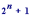 where k and n are natural numbers with ; then N is a prime number if there is a number ' '
with the property that:
leaves remainder
 on division by
,
on division by
,
in other words, if there is a number a such that ... (P') for some number .
Small hand performed example (with and ):
Let
 = 3*
, then choosing
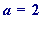
we find that
= 3*
, then choosing
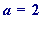
we find that
= = 5* ... (compare with P' above)
and so, by Proth's theorem,
 is prime.
is prime.
extraordinary program - named Proth.exe after Proth - which incorporated Proth's theorem with a revolutionary new idea of
the the past twenty years - the Fast Fourier Transform (FFT). [Charles Van Loan (with whom I used to play five-a-side soccer
in Manchester university in the early 70's) - Joseph C. Ford Professor of Engineering in the Dept. of Computer Science at Cornell
University - is quoted on page 149 of Richard Crandall's
Topics in Advanced Scientific Computation
as follows:
[The Fast Fourier Transform] "
has changed the face of science and
engineering so much so that it is not an exaggeration to say that life
as we know it would be very different without the FFT
." [CVL, 1992]
Basically
what Yves Gallot's program does is this:
it searches for primes
p
of the form:
(the interest lies in small
k
and large
n
)
and - whenever it finds such a prime p - it then tests to see if p divides certain associated Fermat numbers.
In particular, on finding the recent prime
 *
, his program then proceeded to perform the
*
, his program then proceeded to perform the
monumental computation
that
p
divides evenly into
![[Maple Math]](images/FER1640282.gif) .
.
I have prepared a simple Maple worksheet - available from my web site - showing that the number of digits that

has
approximately
 digits, and would require a square board with side length approximately
digits, and would require a square board with side length approximately
 LIGHT
LIGHT
YEARS
in order to write
 in decimal notation at 4 digits per inch, and even if one were to write the digits at
in decimal notation at 4 digits per inch, and even if one were to write the digits at
digits per inch it would only bring the side of the square down to (not a surprise) light years.
as a participant in the Yves Gallot inspired, Proth project - that the 115,130 digit number:
 *
*
 is prime [then - and still - the 10th largest prime ever found]
is prime [then - and still - the 10th largest prime ever found]
and that it
divides evenly
into the 382447-th Fermat number
![[Maple Math]](images/FER1640291.gif) , making
, making
 be the
be the
largest known composite Fermat number .
In the late afternoon of Friday 23rd. July 1999, I sent the following announcement to the Irish Mathematics Departments
List Server, and to a number of individual mathematicians worldwide:
Dear Friends and colleagues,
I am delighted to inform you that using Yves Gallot's Proth program I have just found the 10th. largest known prime (and
a new Irish prime record into the bargain). The prime is 3*
 , and it has 115130 digits.
, and it has 115130 digits.
All the credit goes to Proth (1878, whose theorem I teach to my 3rd. years), to Gallot for his remarkable program, and to my
College for computer access during the slack Summer period. I have put up a brief note about it on my web site
(<http://www.spd.dcu.ie/johnbcos>).
Then, two days later, on the evening of Sunday 25th. August I sent out the following much more exciting announcement:
ANNOUNCING THE LARGEST KNOWN COMPOSITE FERMAT NUMBER
Dear Friends and colleagues, Using Yves Gallot's remarkable Proth program I have made the fortuitous discoveries that:
1.
*
 is
prime
(the 10th. largest known one, and the 3rd. largest non-Mersenne prime),
is
prime
(the 10th. largest known one, and the 3rd. largest non-Mersenne prime),
2.
p
is a divisor of the Fermat number
![[Maple Math]](images/FER1640296.gif)
making
 be the
largest known composite Fermat number
, and the sixth Fermat number for which
be the
largest known composite Fermat number
, and the sixth Fermat number for which
a factor has been found using Gallot's program.
3.
p
is a divisor of the following 'generalized Fermat numbers' (GFN's):
,
, ,
4.
p
is
not
a divisor of any
nor
of
any
,
5.
p
is a 'generalized Cullen prime.'
Previously the largest known composite Fermat number was
, with prime factor
3* [Jeff Young, 1998]. I made my chance discovery while making a systematic Proth-Gallot test
of all numbers 3*
 , with '
n
' ranging between 366,000 and 390,000, spread over 40-50 machines in my
, with '
n
' ranging between 366,000 and 390,000, spread over 40-50 machines in my
College's main computer laboratory, during the past two months. Best wishes to you all, John
REFERENCES
1. Wilfrid Keller maintains the 'Prime factors k*2^n + 1 of Fermat numbers F[m] and complete factoring status' site
at: <http://vamri.xray.ufl.edu/proths/fermat.html>
2. Ray Ballinger valiantly maintains the Proth prime search site at: <http://vamri.xray.ufl.edu/proths/>
3. Chris Caldwell maintains the remarkable Prime number site at: <http://www.utm.edu/research/primes>
Much more detail concerning the story and timing of the discovery may be seen at my College we site,
including a simple analysis showing that the
supra-astronomically large
number
![[Maple Math]](images/FER1640306.gif)
has approximately digits would require a square board of side length approximately LIGHT
YEARS in order to write it out in decimal notation at 4 digits per inch
Web site and some text references :
Yves Gallot's remarkable
Proth.exe
program may be downloaded from:
<http://perso.wanadoo.fr/yves.gallot/primes/gfn.html>
Dr. Ray Ballinger of the University of Florida valiantly maintains the Proth prime search site at:
<http://vamri.xray.ufl.edu/proths/>
The current complete factoring status re Fermat numbers is maintained by Dr. Wilfrid Keller (who once - in 1984 - held
the record for the largest known composite Fermat number; it was then
 ) of Hamburg University at this site:
) of Hamburg University at this site:
<http://vamri.xray.ufl.edu/proths/fermat.html>
For matters relating to primes in general one should look no further than Dr. Chris Caldwell's monumental site at:
<http://www.utm.edu/research/primes/>
A delightful, and famous book - written by a non-mathematician Constance Reid (but benefiting from being the sister
of the renowned mathematician Julia Robinson, and the sister-in-law of Julia's husband, mathematician R.M. Robinson)
-
From Zero to Infinity
, provides a wonderful introduction to Mersenne and Fermat numbers (and much else besides), and
is obtainable from the Mathematical Association of America at http://www.maa.org
For a serious student I unreservedly recommend Hugh C. Williams' monumental
Edouard Lucas and Primality Testing
,
Volume 22 of the Canadian Mathematical Society Series of Monographs and Advanced Texts, published by John Wiley
& Sons, Inc. in 1998. ISBN 0-471-14852-0
Also, should you wish to buy a copy of Hugh Williams' book, I unreservedly recommend Joel Turner of Undercover Books
(Ohio, USA); his email address is joel@undercoverbooks.com, or web http://undercoverbooks.com
Disclaimer
:
These are unsolicited recommendations
.
Here is the above 115,130 digit prime [I omit it from both the mws and html versions to save space.]:
> p := 3*2^382449 + 1;
Brian Beesley, Christer Berg, Steve Bird, Lars Blomberg, Didier Boivin, Jack Brennen, Byron Buck, Ingo Buechel, Robert Burrowes,
Chris Caldwell, Kevin Carton, John Chatzikonstantinou, Robert Clark, John Cosgrave , Joseph Cox, Nick Craig-Wood, Mike Curtis,
Chad Davis, Daval Davis, Mike Dawson, John De-Cuir, Sbastien Desnault, Olivier Dodinval, Pete Dodson, Harvey Dubner ,
Rdiger Eckhard, Germano Vale Filho, Matt Fischer, Martin Freiss, Brandon Galbraith, Yves Gallot , Michael Graef, Gennady Gusev ,
Henry Hamilton, Michael Hannigan, David Hanson, Bill Hodgeman, Chris Jeppesen, Jo Yeong Uk, Paul Jobling, Craig Johnston, Rick Jones, Henk-Jan de Jong, Wilfrid Keller, Chip Kerchner, Ship Key, Eduard Kostolansky, Richard Kowalski, Herni Lifchitz, Lars Lindley,
Dave Linton, Jud McCranie, Bryan McIntyre, Sven Meinhardt, Michal Misztal, Dan Morenus , Chris Nash, Peter Neugebauer,
Takahiro Nohara, Alexis Nunes, Michael O'Brien, Kevin O'Hare, Anton Oleynick, Nicolas Pagnier, Charlie Partin, Michael Peake,
Kirk Pearson, Andy Penrose, Richard Quelle, John Renze , Stephen Scott, Rob Simmons, Chris St.Clair, Ola Svallmark, Aaron Swihart,
Janusz Szmidt, Tadashi Taura, Manfred Toplic, Steven Whitaker, Vincent Wighman, Jeff Wolski, Helmut Zeisel and Bruce Ziemienski.
I have underlined those who have had the joy of discovering a composite Fermat number using Yves Gallot's Proth program.
Some of the others are household names in computational Number Theory, but I mention only:
Chris Caldwell. His Prime Page web site is the most highly regarded for recording material about prime numbers; in fact it has
no serious rival. He has also established a number of recordsover the years in connection with 'Euclidean', and related primes.
Harvey Dubner. The creator of the 'Cruncher' chip, and the holder of an extraordinary range of prime number records.
Wilfrid Keller. In 1984 he established - with access to a CRAY supercomputer at Hamburg university - a new composite Fermat
number record: that
is divisible by the prime number (5*
). That record stood for almost 14 years.
Chris Nash. He has developed a fine program -
Prime Form
- for which he pays handsome tribute to Yves Gallot for making
available the library of Proth.exe. Prime Form allows one to choose whatever numbers one wishes to test for primality.
Tadashi Taura. He participates in the Proth project, but using his own independent approach he has found a number of
smaller composite Fermat numbers.
Return to "Events of the summer"
1. Know what prime and composite numbers are .
2. Know what the Fermat numbers are , and have an idea as to how they came into being.
3. Have some feeling for their great size.
4. Have some rough idea as to the mathematical ideas that have been brought to bear on
Fermat numbers, and know what is the great unsolved problem relating to them
FIN
" John, this enormous Fermat number
-
 -
which you tell us is so big
-
which you tell us is so big
(so big that to write it out on a square sheet of paper at - so vast, that to write it out - not just on a single sheet of paper,
but on sheet upon sheet, stacked back-to-back (at - say - 250 sheets per inch of depth; the thickness of photocopying paper)
to form a giant cube, then that cube would have side length roughly 10 to the power of 38358 light years (1 light year is
approximately 58,656,960,000,000 miles),
how is it possible
for that number to be found on one of the College's computers when it can't be written out in the whole universe
? "
An attempt at an answer . You must stop thinking of that number being written out in the normal way - in decimal notation (in the base 10) -
and concentrate instead on the
way
in which
 is
defined
, namely that it is
, where
w
itself is
defined
by
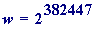
. I am
is
defined
, namely that it is
, where
w
itself is
defined
by
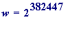
. I am
going to show you how it is possible (not only possible, but I will actually do it!) to calculate - just by using our brains, no computing - that
 is
not
divisible by - let us say - the number 7. I could choose a larger number than '7', but that is not the issue;
the real point
I wish
is
not
divisible by - let us say - the number 7. I could choose a larger number than '7', but that is not the issue;
the real point
I wish
to make is that without knowing the actual value of 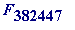 one can easily calculate the remainder that it leaves when it is divided by 7.
I don't need to cut any corners, though I will cut down on the normal standards of mathematical rigour (and where I do so I will point it out).
First , I ask you to think about the remainders that successive powers of 2 leave when divided by 7:
2 leaves remainder 2 when divided by 7,
 , leaves remainder 4 when divided by 7,
, leaves remainder 4 when divided by 7,
= 7*1 + 1, leaves remainder 1 when divided by 7,
= 7*2 + 2, leaves remainder 2 when divided by 7,
 = 7*4 + 4, leaves remainder 4 when divided by 7,
= 7*4 + 4, leaves remainder 4 when divided by 7,
 = 7*9 + 1, leaves remainder 1 when divided by 7,
= 7*9 + 1, leaves remainder 1 when divided by 7,
.
.
.
= 7*306783378 + 2, leaves remainder 2 when divided by 7,
= 7*613566756 + 4, leaves remainder 4 when divided by 7,
= 7*1227133513 + 1, leaves remainder 1 when divided by 7,
I'm sure you see what is going on: the remainders appear to form a cyclic pattern [2, 4, 1], [2, 4, 1], [2, 4, 1], etc.
The 'etc' is all too easily written down, but is it true that the pattern continues? Yes, it does. If you are prepared to accept
that it does then we may continue, but if not then I would just point out that it is easily argued that the cycle does continue
(contact me if you really want to know how the detail is provided).
Now ask : what remainder does leave when divided by 7?, and you will quickly realise that it all depends on
one simple observation, namely: it all depends on the remainder that ' r ' leaves on division by 3 .
if
r
= 1, 4, 7, 10, 13, 16, 19, ... then
 will leave remainder 2 when divided by 7
will leave remainder 2 when divided by 7
In short
:
if
r
leaves remainder 1 when divided by 3
then
 leaves remainder 2 when divided by 7
leaves remainder 2 when divided by 7
if
r
= 2, 5, 8, 11, 14, 17, 20, ... then
 will leave remainder 4 when divided by 7
will leave remainder 4 when divided by 7
In short
:
if
r
leaves remainder 2 when divided by 3
then
 leaves remainder 4 when divided by 7
leaves remainder 4 when divided by 7
if
r
= 3, 6, 9, 12, 15, 18, 21, ... then
 will leave remainder 1 when divided by 7
will leave remainder 1 when divided by 7
In short
:
if
r
is evenly divisible by 3
then
 leaves remainder 1 when divided by 7
leaves remainder 1 when divided by 7
The fundamental point is now this
: In order to be able to calculate the remainder that any number
 leaves on division by 7 (say),
leaves on division by 7 (say),
you
don't
need
to know the actual value of the number
 ;
all
you
need
to know is
the remainder that
r
leaves on division by 3.
;
all
you
need
to know is
the remainder that
r
leaves on division by 3.
And so, for example, if we wanted to know the remainder that left when divided by 7, all we need do is divide the
' 1000000000' by 3, to see what the remainder came to, and it is 1, since 1000000000 = 3 *333333333 + 1 . That then enables us
immediately to say that when
 is divided by 7, the remainder will automatically be 2.
is divided by 7, the remainder will automatically be 2.
You want to see an actual computation?
> 2^1000000000 mod 7;
Error, object too large
and you know why that has happened?
Maple
threw up its hands and said "object too large"; the
 is way, way beyond its capacity.
is way, way beyond its capacity.
But all is not lost!! The modular exponentiation command (which has incorporated into it the square-and-multilpy method) gives:
> 2&^1000000000 mod 7;

and see the next few:
> 2&^1000000001 mod 7;
> 2&^1000000002 mod 7;

> 2&^1000000003 mod 7;
> 2&^1000000004 mod 7;

> 2&^1000000005 mod 7;

That is - as we already know - the [2, 4, 1] cyclic pattern.
Now , what we need to turn our attention to is the question: what remainder does leave when divided by 3 .
[We want to know that, because it is the key to finally knowing what remainder
 leaves on division by 7.]
leaves on division by 7.]
We begin like before (and find that a new cycle emerges):
2 leaves remainder 2 when divided by 3,
= 3*1 + 1, leaves remainder 1 when divided by 3,
 = 3*2 + 2, leaves remainder 2 when divided by 3,
= 3*2 + 2, leaves remainder 2 when divided by 3,
 = 3*5 + 1, leaves remainder 1 when divided by 3,
= 3*5 + 1, leaves remainder 1 when divided by 3,
= 3*10 + 2, leaves remainder 2 when divided by 3,
 = 3*21 + 1, leaves remainder 1 when divided by 3,
= 3*21 + 1, leaves remainder 1 when divided by 3,
I'm sure you see what is going on: the remainders appear to form a cyclic pattern [2, 1], [2, 1], [2, 1], etc.
Now ask
: what remainder does the number
 leave when divided by 3?, and you will quickly realise that it all
leave when divided by 3?, and you will quickly realise that it all
depends on one simple observation, namely:
it all depends on the remainder that '
r
' leaves on division by 2
.
if
r
= 1, 3, 5, 7, 9, 11, 13, ... then
 will leave remainder 2 when divided by 3
will leave remainder 2 when divided by 3
In short
:
if
r
leaves remainder 1 when divided by 2
then
 leaves remainder 2 when divided by 3
leaves remainder 2 when divided by 3
if
r
= 2, 4, 6, 8, 10, 12, 14, ... then
 will leave remainder 1 when divided by 3
will leave remainder 1 when divided by 3
In short
:
if
r
is evenly divisible by 2,
then
 leaves remainder 1 when divided by 3
leaves remainder 1 when divided by 3
Now we are able to determine the exact remainder
that
 leaves when we divide it by 7:
leaves when we divide it by 7:
Because
382447 = 2*191223 + 1, leaves remainder 1 when divided by 2,
then we know
that
 must
leave remainder 2 when divided by 3.
must
leave remainder 2 when divided by 3.
Because
we
know
that
 leaves remainder 2 when divided by 3,
we
then know
that
must
leave remainder 4 when divided by 7,
leaves remainder 2 when divided by 3,
we
then know
that
must
leave remainder 4 when divided by 7,
and so we then know - without having worked out its actual value - that must leave remainder 3 on division by 7
[if we have a number ' X ' that leaves leaves remainder 4 on division by 7, then X = 7*x + 4 , and so X + 1 = (7*x + 4) + 1 = 7*x + 5 , which
leaves 5 over when divided by 7.]
> 2&^(2^100) + 1 mod 7;

> 2&^(2^101) + 1 mod 7;

> 2&^(2^102) + 1 mod 7;
> 2&^(2^103) + 1 mod 7;
Summary
. The supra-astronomically large number
 has been shown
not
to be evenly divisible by 7,
without
the actual value
has been shown
not
to be evenly divisible by 7,
without
the actual value
of
 being known, or needing to be known.
being known, or needing to be known.